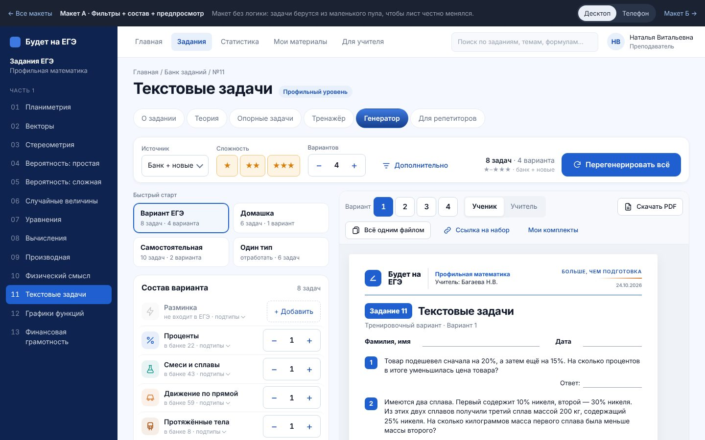

Выбран
А · Фильтры + состав + предпросмотр
Один экран. Сверху липкая полоса фильтров со сводкой и кнопкой «Сгенерировать». Слева пресеты и состав, справа живой лист. На телефоне фильтры сворачиваются в чипы и нижний лист, кнопка прибита к низу.
Открыть макет А